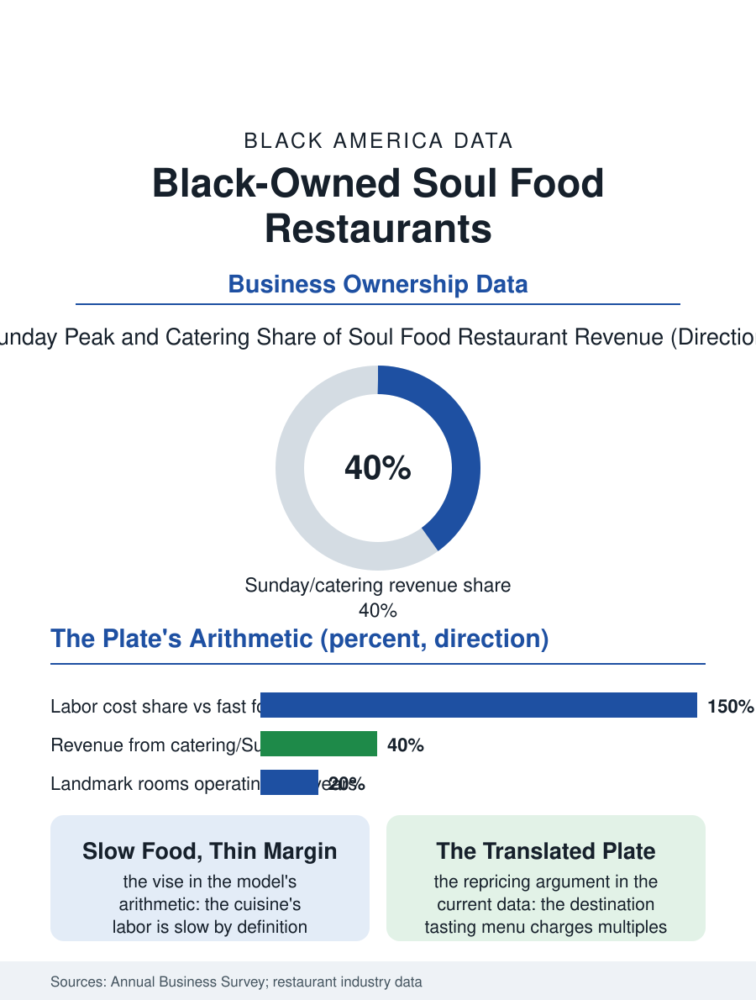

Black Business
The Archive at Table: Black-Owned Soul Food Restaurants
Slow food and thin margins, an archive at table scale, and a cuisine being repriced by its own arrival. The soul food file.

The soul food restaurant is the Black business most burdened with meaning per dollar of margin: the meat-and-three and the Sunday dinner trade carry the cuisine's archive on a food cost and a labor model that the industry's economics punish, and the survivors, counted in the business census's thousands of Black-owned restaurants, are institutions whose books the culture audits by a different standard. This article reads the soul food restaurant file.
The Plate's Economics
The model's arithmetic is the file's foundation: the cuisine is slow by definition, the braises and the greens and the fried-to-order mains requiring the labor hours the fast formats engineered out, while the plate's price is capped by the neighborhood's wallet and the tradition's own ethic, the generous portion being the cuisine's promise and its cost in one gesture, so that the soul food restaurant's margin is squeezed between the labor the food demands and the price the community's table can bear, a vise the survivors escape only through the volume of the Sunday institution, the catering file's overflow, or the cafeteria line's throughput. The location file is the corridor's: the restaurant as the district's dining room, its regulars' tables a civic institution, its wall of photographs the neighborhood's album, the value of which appears in no appraisal when the building's sale prices the business by its books. The cookbook and the sauce line deserve the file's forward line, because the landmark room's second business, the bottled sauce and the published recipes and the frozen line in the grocery's local set, is the archive's monetization in the pattern of the other food files, converting the room's reputation into the product that travels where the diner cannot, and the estates of the closed landmarks have learned, in the current deals, to keep the name's rights when the room itself is gone.
Meat-and-Three to the Destination Table
The cuisine's current era has repriced the tradition from outside: the food media's canonization of the soul food masters, the destination restaurant whose tasting menu translates the tradition into the fine dining file's prices, and the chef-owned flagships of the metros whose success the trade press covers as the cuisine's arrival, a tier whose Black ownership is its point and whose prices the neighborhood original cannot charge in its own dining room, the gentrification of the plate being the file's live argument, conducted in the reviews and the rents of the same blocks. The fast-casual conversion is the middle tier's experiment, the soul food bowl and the fried chicken format's franchising, whose unit economics test whether the tradition's flavors can survive the format's labor model, the early chains' data being the file's current reading. The pandemic's toll on the tier was the independent restaurant's general toll compounded by the clientele's age and the dining room's centrality to the model, and the recovery's grants and the community's deliberate patronage, the buy-Black weekends of the local campaigns, are in the survivors' accounts as the bridge the books alone would not have built.
The Archive at Table
The soul food file closes on the restaurant's archival function, because the cuisine's recipes live in the cooks rather than the books, and the restaurant is where the tradition is transmitted at table scale, the young cook's apprenticeship in the survivor's kitchen being the culinary file's equivalent of the archive's fellowship. The succession file is therefore the culture's as much as the family's: the closing of a landmark soul food room is reported as a civic death in the local press of every city in this atlas, and the buyers and heirs who keep the name and the recipes are performing a preservation the market's price does not capture, a fact the landmark programs and the culinary heritage designations have begun, belatedly, to formalize. The census counts the restaurants in the thousands across the cuisine's formats. The file's last entry is the Sunday line out the door, the church clothes and the takeout containers, at the room where the neighborhood has eaten its occasions for forty years, the margin thin and the meaning thick, which is the file's definition of the business and the community's standing reason for keeping its books in the black by every means the culture commands.
More in Black Business
Black-Owned Businesses: Counts, Receipts, and the Representation Gap
About 161,000 Black-owned employer firms and three million solo ventures: how the Census Bureau counts Black business ownership, where firms concentrate, and the gap between population share and business share.
Black Median Net Worth: The Wealth Gap in Federal Reserve Data
The Federal Reserve puts Black median family net worth at $44,900, against $285,000 for White families — about 16 cents on the dollar. The widest gap in economic data.
Black Buying Power: The $1.8 Trillion Consumer Economy
Black buying power is estimated at about $1.8 trillion — larger than the economy of most nations. What the figure measures, who produces it, and what it buys.
Source: U.S. Census Bureau, Annual Business Survey for restaurants; National Restaurant Association and culinary heritage data.